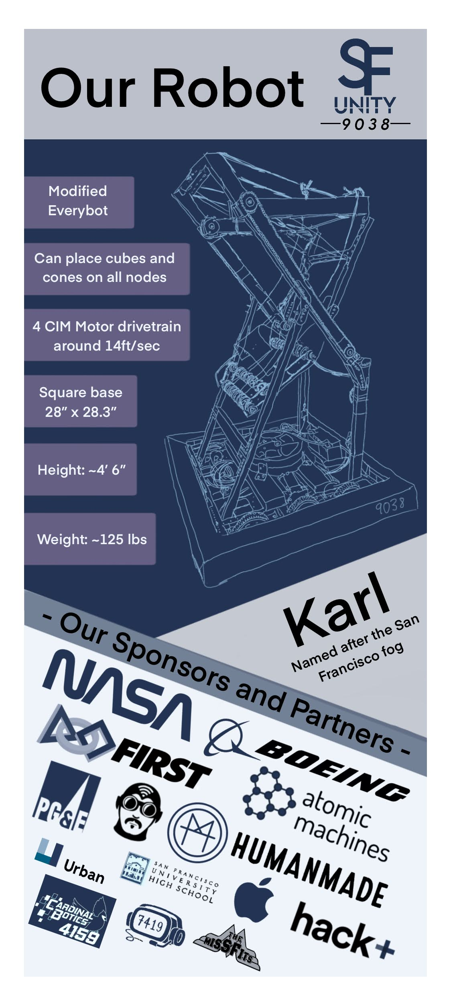

SF Unity / FRC Charged Up robot
Karl 2023
A chapter of the SF Unity Robotics project: the team's first competition robot, built while the team was also building its design process, fabrication habits, sponsorship base, and student leadership structure.

Context
Building the team while building the machine.
Karl centered on adapting a proven robot architecture into something the new team could fabricate, assemble, inspect, and repair. The constraints were practical: budget, student experience, available tools, packaging, weight, center of gravity, wiring clearance, and field repair speed.
Contribution
Physical build and operating structure.
Kyle helped lead fabrication and assembly, organized machining and hand-fabrication tasks, guided students through build work, and coordinated priorities across design, fundraising, outreach, and team infrastructure as SF Unity expanded robotics access to more than 150 students across nine schools.
Move reference geometry into parts the team could actually fabricate and inspect.
Divide tasks, maintain priorities, and keep students moving toward a competition-ready machine.
Use testing and competition feedback to make small, reliable improvements under deadline pressure.
Evidence
Robot, poster, team.
The available media shows Karl as both a robot and an organizational milestone for the team.



Reflection
Reliable systems are teachable systems.
Karl reinforced that robust engineering depends on communication and serviceability. The best competition design is not only performant; it is understandable enough for a team to maintain under pressure.